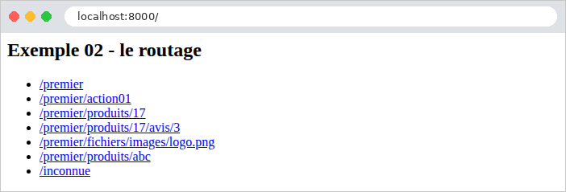
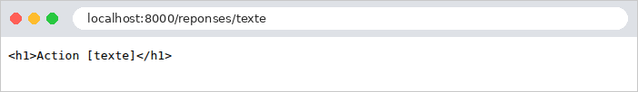
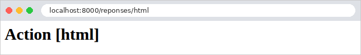
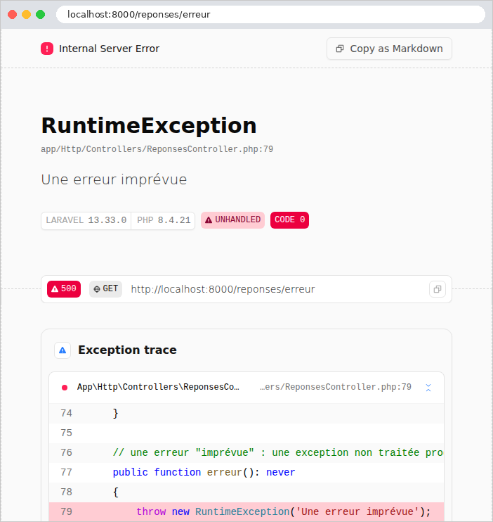

2. Actions, routage, réponses
Ce chapitre étudie le chemin d'une requête, du navigateur jusqu'à l'action qui la traite, et la réponse que renvoie cette action. Les vues n'apparaîtront qu'au chapitre 4 : ici, les actions renvoient directement du texte ou du JSON.
2.1. Exemple 01 : la structure d'une application Laravel
Le premier exemple est la plus petite application [Laravel] possible. Un projet créé par [composer create-project laravel/laravel] contient une cinquantaine de fichiers et de dossiers (cf. introduction) ; nous n'en gardons ici que ceux dont l'application ne peut pas se passer :
- [public/index.php] : le point d'entrée de l'application. Toutes les requêtes HTTP, quelle que soit leur URL, sont confiées à ce fichier. Le dossier [public] est le seul dossier que le serveur web publie : il contient aussi les fichiers statiques (feuilles de style, images, scripts), et seulement eux ;
- [bootstrap/app.php] : la construction et la configuration de l'application. Le dossier [bootstrap/cache] reçoit des fichiers que [Laravel] calcule lui-même pour démarrer plus vite ;
- [routes/web.php] : la table de routage, qui associe chaque URL à l'action qui la traite ;
- [storage] : les fichiers que l'application écrit pendant son fonctionnement : le journal des erreurs ([storage/logs]), les sessions, le cache, les vues compilées ([storage/framework]) ;
- [.env] : la configuration de l'application, sous forme de couples [NOM=valeur] ;
- [artisan] : l'outil en ligne de commande de [Laravel] ;
- [composer.json] : la description du projet pour [Composer].
2.1.1. Le point d'entrée : public/index.php
- ligne 1 : un fichier [PHP] commence par la balise [<?php]. Tout ce qui la suit est du code [PHP] ; un fichier qui ne contient que du code ne la referme pas ;
- ligne 2 : un commentaire, de [//] jusqu'à la fin de la ligne ([/* ... */] délimite un commentaire sur plusieurs lignes) ;
- ligne 4 : l'instruction [use] importe un nom de classe. Le nom complet d'une classe [PHP] comprend son espace de noms (*namespace*), l'équivalent des paquets de [Java] : [Illuminate\Http\Request] est la classe [Request] de l'espace de noms [Illuminate\Http]. Après le [use], le fichier peut écrire simplement [Request]. [Illuminate] est le nom de code des composants de [Laravel] ;
- ligne 7 : [require] exécute un autre fichier [PHP]. [__DIR__] est le dossier du fichier en cours (ici [public]) ; l'opérateur [.] concatène deux chaînes. Le fichier [vendor/autoload.php], écrit par [Composer], installe le chargeur de classes : la première fois qu'une classe est utilisée, il trouve et charge le fichier qui la définit. Grâce à lui, on n'écrit jamais de [require] pour les classes. Le dossier [vendor] est celui du dossier [exemples], partagé par tous les exemples (cf. introduction) : d'où les deux [..] ;
- ligne 10 : un fichier exécuté par [require] peut rendre une valeur, par l'instruction [return] : [bootstrap/app.php] rend l'application, un objet de la classe [Illuminate\Foundation\Application], rangé dans la variable [$app]. En [PHP], le nom d'une variable commence toujours par [$]. [require_once] ne ferait rien si le fichier avait déjà été exécuté ;
- ligne 11 : [Request::capture()] appelle la méthode statique [capture] de la classe [Request] (l'opérateur [::] désigne un membre d'une classe, l'opérateur [->] un membre d'un objet). Elle fabrique un objet [Request] à partir de la requête HTTP reçue par [PHP]. [$app->handleRequest(...)] fait traiter cette requête par l'application, et envoie la réponse au navigateur.
Ce fichier est le même pour tous les exemples, et, à deux [..] près, le même que celui d'un projet [Laravel] ordinaire. Il met en lumière une particularité de [PHP], qui explique beaucoup de choses dans [Laravel] : l'application est reconstruite à chaque requête. Le serveur web exécute [public/index.php] du début à la fin pour chaque requête reçue : il charge les classes, construit l'application, traite la requête, envoie la réponse, puis oublie tout. Aucun objet ne survit d'une requête à la suivante. Nous verrons, au chapitre sur les portées des données, les conséquences de ce fonctionnement, qui est l'opposé de celui de [Java], de [C#] ou de [Python], dont les applications restent en mémoire entre deux requêtes.
2.1.2. La construction de l'application : bootstrap/app.php
- ligne 7 : le chargeur de classes de [Composer] connaît les classes des bibliothèques du dossier [vendor]. Il doit aussi connaître celles de l'application, rangées par convention dans son dossier [app], sous l'espace de noms [App]. Dans un projet ordinaire, [Composer] l'apprend du fichier [composer.json] du projet. Nos exemples partagent un seul dossier [vendor], mais chacun a son propre dossier [app] : chaque exemple le déclare donc lui-même au chargeur, par sa méthode [addPsr4] (la norme [PSR-4] fait correspondre les espaces de noms et les dossiers : la classe [App\Http\Controllers\PremierController] est dans le fichier [app/Http/Controllers/PremierController.php]). Un [require] rend la valeur du fichier exécuté ; [vendor/autoload.php] rend le chargeur (il ne l'installe qu'une fois, même exécuté deux fois). Dans une chaîne entre apostrophes, [\\] désigne un seul caractère [\]. Cet exemple n'a pas encore de dossier [app] : la ligne est là pour les suivants ;
- ligne 9 : la construction de l'application. [Application::configure(...)] rend un objet constructeur (*builder*), dont chaque méthode règle un aspect de l'application et rend le constructeur lui-même, ce qui permet d'enchaîner les appels ; [create()] construit enfin l'application. Le paramètre [basePath: dirname(__DIR__)] est un paramètre nommé : la valeur est associée au paramètre [basePath] par son nom, et non par sa position. [dirname(__DIR__)] est le dossier parent de [bootstrap], c'est-à-dire le dossier de l'exemple : c'est à partir de lui que [Laravel] trouve tous les autres ([routes], [storage]...) ;
- ligne 11 : les routes de l'application sont celles du fichier [routes/web.php]. Le nom [web] n'est pas anodin : ces routes reçoivent les middlewares du groupe [web] (sessions, cookies chiffrés, protection anti-CSRF...), qui conviennent à une application qui fabrique des pages HTML. Nous les rencontrerons au fil des chapitres ;
- lignes 13-14 : les middlewares et le traitement des exceptions, avec leurs réglages par défaut. Nous les compléterons dans les exemples suivants.
2.1.3. La table de routage : routes/web.php
- ligne 4 : l'importation de la classe [Route]. C'est une façade de [Laravel] : une classe dont les méthodes statiques ([Route::get]) transmettent l'appel à un objet de l'application, ici le routeur. Les façades sont l'une des marques de fabrique de [Laravel] : elles donnent un accès court aux services de l'application, sans avoir à se procurer l'objet qui les rend ;
- lignes 7-10 : [Route::get] déclare une route : les requêtes [GET /] seront traitées par la fonction donnée en second paramètre. C'est le routage. Cette fonction n'a pas de nom : c'est une fonction anonyme, une valeur comme une autre, que l'on peut passer en paramètre. La fonction associée à une route est une action. Il existe aussi [Route::post], [Route::put], [Route::delete]... ;
- ligne 9 : l'action rend une chaîne de caractères. La valeur rendue par une action est la réponse envoyée au navigateur : [Laravel] la place dans le corps de la réponse HTTP. Une chaîne entre apostrophes (['...']) est écrite telle quelle ; entre guillemets (["..."]), les variables qu'elle contient sont remplacées par leurs valeurs (exemple 02).
2.1.4. La configuration : .env
Le fichier [.env] contient les réglages propres à une installation de l'application : la même application, installée sur le poste d'un développeur et sur un serveur de production, n'aura pas le même [.env]. Ce fichier ne doit d'ailleurs pas être publié avec le code source (il contient des secrets). Les lignes qui commencent par [#] sont des commentaires.
- ligne 2 : le nom de l'application. [Laravel] s'en sert, par exemple, pour nommer le cookie de session ([exemple01_session], ci-dessous) ;
- ligne 4 : l'environnement : [local] pour le développement, [production] sur un serveur ;
- ligne 6 : la clé secrète de l'application : 32 octets aléatoires, codés en base 64. [Laravel] s'en sert pour chiffrer les cookies et signer certaines données (nous y reviendrons). Elle est créée par la commande [php artisan key:generate], qui l'écrit dans le fichier [.env] ; chaque exemple a la sienne. Sans elle, l'application refuse de démarrer (« No application encryption key has been specified ») ;
- ligne 8 : le mode debug : une exception non traitée affiche une page détaillée (cf. exemple 03). Ce mode est fait pour le développement, et seulement pour lui : la page d'erreur révèle le code source et la configuration de l'application ;
- lignes 10-11 : les sessions et le cache (chapitre sur les portées) sont rangés dans des fichiers, sous le dossier [storage]. Par défaut, [Laravel] les range dans une base de données, que nous n'avons pas encore.
Tout ce que [Laravel] ne trouve pas dans [.env] garde sa valeur par défaut. Ces valeurs par défaut sont décrites par les fichiers de configuration du framework ([vendor/laravel/framework/config/*.php]) ; un projet ordinaire en a une copie dans son dossier [config], que l'on peut modifier. Nos exemples s'en passent : quelques lignes de [.env] leur suffisent.
2.1.5. L'outil artisan et le fichier composer.json
Le fichier [artisan] est un script [PHP], qui construit l'application, comme [public/index.php], mais pour exécuter une commande plutôt que traiter une requête :
- ligne 1 : sous [Linux] et [macOS], cette ligne permet d'exécuter le fichier directement ([./artisan]) ; sous [Windows], on écrit toujours [php artisan] ;
- ligne 13 : [ArgvInput] représente les paramètres de la ligne de commande ([serve], [route:list]...) ; [handleCommand] exécute la commande, et rend son code de sortie.
[php artisan list] affiche la liste des commandes disponibles : une centaine, dont nous utiliserons quelques-unes. Le fichier [composer.json], enfin, décrit l'exemple :
C'est un document JSON. [Laravel] y lit l'espace de noms des classes de l'application ([App\], dans le dossier [app/]), dont il a besoin, par exemple, pour distinguer le code de l'application de celui du framework dans ses pages d'erreur. Le fichier [composer.json] d'un projet ordinaire contient aussi la liste de ses bibliothèques ; celle des exemples est dans le fichier [exemples/composer.json] (cf. introduction).
2.1.6. Exécution
Dans un terminal ouvert sur le dossier [01-structure], on tape [php artisan serve]. [Laravel] affiche :
La commande [serve] lance le serveur de développement intégré à [PHP] ([php -S]), configuré pour confier toutes les requêtes à [public/index.php] (sauf celles des fichiers qui existent dans le dossier [public], qu'il envoie tels quels). Il écoute sur le port 8000 de l'adresse [127.0.0.1], l'adresse de la machine elle-même ([localhost]) : il n'accepte que les requêtes venues de cette machine, ce qui convient au développement ([--host=0.0.0.0] l'ouvrirait aux autres machines du réseau ; [--port=8001] changerait le port). On l'arrête par [Ctrl-C]. Ce serveur est fait pour le développement : en production, ce sera un serveur web comme [Apache] ou [Nginx], associé à [PHP-FPM] (cf. étude de cas). Il n'est pas nécessaire de le relancer après une modification du code : puisque [PHP] relit les fichiers à chaque requête, la modification est prise en compte à la requête suivante. Seule une modification du fichier [.env] demande un redémarrage, que la commande [serve] fait d'ailleurs d'elle-même.
Demandons l'URL [http://localhost:8000/] avec un navigateur :

puis avec [curl]. L'option [-i] affiche aussi les entêtes HTTP de la réponse :
La première ligne de la réponse est la version du protocole, le code de statut, 200, et son libellé, [OK]. Viennent ensuite les entêtes : l'hôte demandé, [Connection: close] (le serveur de développement ferme la connexion après chaque réponse), la version de [PHP], le type du contenu, une consigne de cache, la date, et deux cookies. Une ligne vide sépare les entêtes du corps de la réponse. Dans la suite du document, nous ne reproduirons plus les entêtes [Host], [Connection], [X-Powered-By], [Cache-Control] et [Date], qui ne varient pas, ni les cookies, sauf quand ils sont l'objet de l'exemple.
L'entête [Content-Type: text/html; charset=utf-8] indique que la réponse est du HTML, dont les caractères sont codés en UTF-8. C'est le choix de [Laravel] pour toute chaîne rendue par une action : le navigateur interprète donc la chaîne comme du HTML (ici, sans balise, elle s'affiche telle quelle). L'exemple 03 montrera comment annoncer un autre type.
Les deux cookies surprennent peut-être : l'application n'en a demandé aucun. Ils sont déposés par deux middlewares du groupe [web] (cf. [bootstrap/app.php]) : [exemple01_session] identifie la session de l'utilisateur, et [XSRF-TOKEN] contient le jeton de la protection anti-CSRF. Leurs valeurs sont chiffrées avec la clé [APP_KEY]. Nous les étudierons aux exemples 20 et 21.
À chaque requête, la console du serveur affiche une ligne de journal : la date, le chemin demandé, et la durée du traitement.
2.2. Exemple 02 : le routage
Le routage associe une URL et une méthode HTTP (GET, POST...) à une action. Écrire toutes les actions dans [routes/web.php], sous forme de fonctions anonymes, deviendrait vite illisible : on les range dans des classes, les contrôleurs. L'exemple 02 en a deux :
Les fichiers [artisan], [public/index.php], [composer.json] et [.env], ainsi que les dossiers [bootstrap/cache] et [storage], sont ceux de l'exemple 01 : nous ne les citerons plus (seuls changent le nom de l'exemple et la clé secrète). Chaque contrôleur est une classe de l'espace de noms [App\Http\Controllers], dans le dossier [app/Http/Controllers] : c'est la convention de [Laravel], et la norme [PSR-4] fait correspondre les deux (exemple 01).
2.2.1. Le contrôleur AccueilController
- ligne 4 : l'espace de noms de la classe. Son nom complet est donc [App\Http\Controllers\AccueilController] ;
- ligne 6 : la classe. Par convention, un nom de classe s'écrit avec une majuscule à chaque mot ([AccueilController]), un nom de méthode ou de variable avec une minuscule au premier mot ([action01Post]). Un contrôleur [Laravel] n'a besoin d'hériter d'aucune classe ;
- ligne 10 : l'action [index], une méthode publique de la classe (le routeur ne peut appeler que des méthodes publiques). [: string] déclare le type de la valeur rendue : une chaîne. Les types sont facultatifs en [PHP], mais, quand ils sont écrits, [PHP] les vérifie à l'exécution ;
- lignes 12-23 : une chaîne sur plusieurs lignes. La syntaxe [<<<'HTML'] ... [HTML] (*nowdoc*) délimite un texte écrit tel quel, entre deux lignes portant le même mot, ici [HTML] ; l'indentation de la ligne de fin est retirée de toutes les lignes. L'action rend du HTML, envoyé avec le type [text/html] (cf. exemple 01).
L'action [index] renvoie ainsi une page HTML qui contient des liens vers les actions de l'autre contrôleur :

2.2.2. Le contrôleur PremierController
- lignes 9-11 : la même méthode [index] que dans l'autre contrôleur : il n'y a pas de conflit, chaque contrôleur est une classe différente ;
- lignes 21-23 : l'action de la requête [POST /premier/action01]. Le nom d'une action est libre : c'est la table de routage qui l'associe à une URL et à une méthode HTTP ;
- lignes 28-30 : le paramètre [$id] de l'action reçoit la valeur du paramètre de route [{id}] (voir [routes/web.php]) : pour l'URL [/premier/produits/17], il vaut 17. Le type [int] du paramètre demande à [PHP] de convertir la valeur (une chaîne, extraite de l'URL) en entier. C'est la liaison de données (*data binding*), que le chapitre suivant étudiera en détail. Dans la chaîne entre guillemets ["Produit n° $id"], la variable [$id] est remplacée par sa valeur : c'est l'interpolation ;
- lignes 34-36 : deux paramètres de route, passés à deux paramètres de l'action. [Laravel] les associe par leur nom : l'ordre des paramètres de l'action n'a pas d'importance ;
- lignes 40-42 : un paramètre de route qui contient des [/].
2.2.3. La table de routage : routes/web.php
- lignes 4-5 : l'importation des deux contrôleurs ;
- ligne 9 : l'action n'est plus une fonction anonyme, mais un tableau de deux éléments : la classe du contrôleur et le nom de la méthode. [AccueilController::class] est le nom complet de la classe, sous forme de chaîne (['App\Http\Controllers\AccueilController']). Pour chaque requête [GET /], [Laravel] crée un objet [AccueilController] et appelle sa méthode [index] ;
- ligne 12 : un groupe de routes : les routes déclarées dans la fonction passée à [group] partagent les réglages du groupe. [prefix('premier')] ajoute [/premier] devant leurs chemins ; [controller(PremierController::class)] leur donne leur contrôleur, et chaque route n'a plus qu'à nommer sa méthode. L'URL d'une action est la concaténation du préfixe du groupe et du chemin de sa route ;
- ligne 14 : la route ['/'] désigne le préfixe lui-même : [GET /premier] ;
- lignes 16-18 : le même chemin, pour deux méthodes HTTP : [GET] et [POST], traitées par deux actions différentes. Il existe aussi [Route::match(['get', 'post'], ...)], pour une action qui traite plusieurs méthodes, et [Route::any], pour toutes ;
- ligne 21 : [{id}] est un paramètre de route : ce segment de l'URL peut prendre plusieurs valeurs. Par défaut, un paramètre accepte n'importe quel texte sans barre oblique ; [whereNumber('id')] contraint le paramètre à ne contenir que des chiffres : sinon, la route ne correspond pas. Il existe aussi [whereAlpha] (des lettres), [whereUuid], [whereIn('id', [...])] (une liste de valeurs), et [where], qui accepte une expression régulière ;
- ligne 23 : deux paramètres de route, contraints tous les deux ([whereNumber] accepte un tableau de noms). En [PHP], [[a, b]] est un tableau (*array*) ;
- ligne 26 : la contrainte [where('chemin', '.*')] est une expression régulière : [.] désigne n'importe quel caractère, [*] sa répétition. Le paramètre accepte ainsi n'importe quelle fin d'URL, y compris des [/].
2.2.4. La configuration : bootstrap/app.php
- lignes 11-15 : la méthode [withMiddleware] reçoit cette fois une fonction, que [Laravel] appelle en lui passant l'objet [$middleware] qui décrit les middlewares de l'application. [: void] indique que la fonction ne rend rien. Nous l'utilisons pour écarter la protection anti-CSRF des URL [/premier/...] : cette protection, que nous étudierons à l'exemple 21, refuse toute requête POST qui ne provient pas d'un formulaire de l'application, donc celles que nous allons envoyer avec [curl]. Le paramètre nommé [except] donne la liste des chemins à écarter, où [*] remplace n'importe quelle suite de caractères. Sans cette ligne, la requête POST de [curl] recevrait une réponse d'erreur 419 (*Page Expired*).
2.2.5. Exécution
Voici les réponses à quelques requêtes :
Pour envoyer une requête POST, on utilise l'option [-X POST] de [curl] :
Une méthode HTTP qu'aucune action ne traite pour ce chemin produit une erreur 405 ([Method Not Allowed]). L'entête [allow] indique les méthodes acceptées ; [Laravel] y ajoute [HEAD] (la même requête que GET, sans le corps de la réponse), qu'il traite lui-même pour toute route GET :
En mode debug, le corps de la réponse est la page d'erreur détaillée de [Laravel], que nous verrons à l'exemple 03 : elle explique que la méthode PUT n'est pas acceptée pour cette route (« The PUT method is not supported for route premier/action01. Supported methods: GET, HEAD, POST. »).
Enfin, une URL qu'aucune route ne traite produit une erreur 404. C'est aussi le cas d'un identifiant qui n'est pas un nombre : la contrainte [whereNumber] empêche la route de correspondre à [/premier/produits/abc].
La réponse est une page d'erreur de [Laravel], en anglais. Dans un navigateur :

Le chapitre 7 montrera comment la remplacer par une page propre à l'application. Remarquons encore que [Laravel] ne distingue pas [/premier] de [/premier/] : la barre oblique finale est ignorée par le routeur, et les deux URL mènent à la même action.
La commande [php artisan route:list], lancée dans le dossier de l'exemple, liste toutes les routes de l'application :
Chaque ligne donne les méthodes HTTP, le chemin et l'action ([Contrôleur@méthode]). Les deux dernières routes, nommées [storage.local] et [storage.local.upload], sont créées par [Laravel] lui-même : elles servent les fichiers que l'application range dans son dossier [storage/app], à condition qu'ils soient accompagnés d'une signature (une URL signée, que seule l'application sait fabriquer). Nous ne les utiliserons pas.
2.3. Exemple 03 : les réponses d'une action
Ce que renvoie une action détermine la réponse HTTP. L'exemple 03 passe en revue les principaux cas :
La table de routage associe chaque URL [/reponses/xxx] à l'action [xxx] du contrôleur :
Le contrôleur [ReponsesController] :
Commentons ce code :
- lignes 16-19 : la fonction [response] fabrique une réponse HTTP complète, un objet [Illuminate\Http\Response], dont le premier paramètre est le corps. [Laravel] fournit de nombreuses fonctions de ce genre, disponibles partout, qu'il appelle des helpers : [response], [redirect], [abort], [view], [collect]... La méthode [header] fixe un entête de la réponse, ici son type : [text/plain] (du texte brut). Le navigateur n'interprétera pas les balises. [header] rend la réponse elle-même : les appels s'enchaînent ;
- lignes 23-25 : la même chaîne, rendue seule : [Laravel] l'envoie avec le type [text/html], et le navigateur l'interprète ;
- lignes 29-31 : [response()], appelée sans paramètre, rend une fabrique de réponses, dont la méthode [json] convertit son paramètre en JSON, et fabrique une réponse de type [application/json] (un objet [JsonResponse]). La conversion est faite par la fonction [json_encode] de [PHP] : un objet devient un objet JSON dont les champs sont les propriétés publiques de l'objet. La classe [Personne] est présentée plus bas ;
- lignes 35-37 : plus simple encore : une action qui rend un tableau produit une réponse JSON, sans appel à [response()->json]. Le tableau [PHP] est une structure à tout faire : [['nom' => 'Martin', ...]] est un tableau associatif, dont chaque élément a une clé (ici ['nom']) ; il devient un objet JSON. Un objet ordinaire, en revanche, ne peut pas être rendu seul : [Laravel] essaierait d'en faire une chaîne, et l'action échouerait (« Object of class App\Models\Personne could not be converted to string ») ; il doit passer par [response()->json] ;
- lignes 41-43 : un tableau dont les clés sont implicites (0, 1, 2) est une liste ; il devient un tableau JSON ;
- lignes 47-49 : la fonction [collect] fabrique une collection [Laravel], un objet qui enveloppe un tableau et offre une centaine de méthodes pour le transformer, qu'on enchaîne : [sort] trie les éléments, [values] renumérote les clés à partir de 0, [map] applique une fonction à chaque élément. [fn (int $n) => $n * 10] est une fonction fléchée : une fonction anonyme réduite à une expression, dont elle rend la valeur. Une collection rendue par une action devient, elle aussi, un tableau JSON. Nous retrouverons les collections avec la base de données, au chapitre 9 ;
- lignes 53-55 : le second paramètre de [json] est le code de statut : 201 ([Created]) remplace 200. Un troisième paramètre, facultatif, fournirait des entêtes : [['X-Exemple' => '03']] ;
- lignes 59-61 : le code 204 ([No Content]) signifie « rien à afficher » : la réponse n'a pas de corps ;
- lignes 65-67 : une erreur « prévue » : une réponse 404 ([Not Found]), avec un corps JSON choisi par l'action. Le texte est entre guillemets parce qu'il contient une apostrophe ;
- lignes 71-73 : la même erreur, produite par la fonction [abort]. [abort] ne rend rien : elle lève une exception ([NotFoundHttpException], pour le code 404), qui interrompt l'action ; [Laravel] la transforme en réponse d'erreur. Le type [never] indique que la méthode ne se termine jamais normalement. C'est la façon la plus courante d'arrêter une action en erreur, même au fond d'une fonction appelée par l'action ;
- lignes 77-79 : une erreur « imprévue » : une exception que personne ne traite produit une réponse 500 ([Internal Server Error]). L'instruction [throw] lève une exception ; [RuntimeException] est une classe d'exception de la bibliothèque standard de [PHP], importée par un [use] (ligne 10) comme toute classe. L'action ne s'appelle pas [exception], comme dans les autres versions du cours : pour [Laravel], une action nommée ['exception'] désignerait la classe [Exception] de [PHP] (les noms de classes ne distinguent pas les majuscules), et la route serait refusée.
La classe [Personne] :
- ligne 8 : [readonly] rend toutes les propriétés de la classe non modifiables après leur initialisation : un objet [Personne] est immuable ;
- lignes 10-14 : [__construct] est le constructeur de la classe, appelé par [new Personne('Martin', 'Jean', 42)]. Ses paramètres précédés de [public] sont promus : chacun déclare une propriété de même nom, initialisée par le paramètre. Cette écriture évite de déclarer les propriétés, puis de les affecter une par une dans le corps du constructeur (qui est ici vide). Les propriétés sont publiques : [json_encode] les voit.
Reste le fichier [bootstrap/app.php] :
- ligne 15 : un middleware est ajouté à l'application : la classe [JsonLisible], que voici.
Par défaut, [Laravel] produit un JSON compact, sur une seule ligne, dont les caractères non ASCII sont écrits sous forme d'échappements : [créée] devient [créée], ce qui est du JSON valide, mais peu lisible. Pour les exemples de ce cours, nous voulons un JSON lisible. Un middleware est une classe dont la méthode [handle] est appelée pour chaque requête, autour de l'action : [$next($request)] fait traiter la requête par la suite de l'application (les autres middlewares, puis l'action), et rend la réponse (ligne 17). Le middleware peut alors la modifier : si c'est une réponse JSON (l'opérateur [instanceof] teste la classe d'un objet), il change ses options d'encodage : caractères non ASCII et barres obliques écrits tels quels, présentation indentée (ligne 21). L'opérateur [|] combine les trois options, qui sont des constantes de [PHP]. Le chapitre sur le cycle de vie d'une requête étudiera les middlewares en détail ; les exemples 05 à 12 réutilisent celui-ci.
Dans un navigateur, la différence entre [text/plain] et [text/html] est visible :


Voici les réponses des autres actions :
L'objet a été converti en objet JSON, un champ par propriété publique. L'action [/reponses/tableau] produit exactement la même réponse.
La réponse de [abort] est la page d'erreur 404 standard de [Laravel], celle de l'exemple 02. Notre message n'y figure pas : la page standard n'affiche que le code et son libellé. Il apparaît en revanche quand le client demande une réponse JSON, par l'entête [Accept: application/json] (option [-H] de [curl]) : [Laravel] adapte alors ses réponses d'erreur, qui deviennent des documents JSON :
En mode debug, le document JSON contient aussi le nom de l'exception, le fichier et la ligne où elle a été levée, et la pile d'appels (la liste des fonctions en cours d'exécution au moment de l'erreur). Sans le mode debug, il ne contient que le message. Le chapitre 7 montrera comment afficher le message dans une page d'erreur « maison ».
Reste l'exception imprévue. En mode debug, le navigateur affiche la page d'erreur de [Laravel] : le type et le message de l'exception, le fichier et la ligne où elle a été levée, puis la pile d'appels, de la plus récente à la plus ancienne, avec pour chacune la ligne de code concernée :

La première fonction de la pile est notre action, [erreur], à la ligne 79 du fichier [ReponsesController.php]. Plus bas, la page montre la requête (ses entêtes, ses paramètres), l'application (les routes, les réglages) : c'est pour cela que le mode debug ne doit jamais être activé sur un serveur accessible à d'autres. Le bouton « Copy as Markdown » copie la description de l'erreur, prête à être collée dans une question à une IA. L'erreur est aussi écrite dans le journal de l'application, le fichier [storage/logs/laravel.log] (nous n'en reproduisons que le début) :
Sans le mode debug ([APP_DEBUG=false] dans [.env]), la même requête produit une courte page d'erreur, « 500 | Server Error », qui ne révèle rien du code ; l'erreur n'est décrite que dans le journal. Le chapitre 7 montrera comment afficher une page d'erreur propre à l'application.
2.4. Exemple 04 : les redirections
Une redirection est une réponse qui demande au navigateur d'aller chercher une autre URL : un code 3xx, et l'entête [Location], qui contient la nouvelle adresse. Le navigateur envoie aussitôt une seconde requête, vers cette adresse. Le contrôleur [RedirectionsController] :
- lignes 11-13 : la fonction [redirect] fabrique une réponse de redirection (un objet [RedirectResponse]) vers l'adresse donnée. Le code 301 ([Moved Permanently]) signifie que la page a définitivement changé d'adresse : le navigateur (et les moteurs de recherche) peuvent retenir la nouvelle ;
- lignes 23-25 : sans second paramètre, [redirect] produit une redirection temporaire, de code 302 ([Found]). L'adresse est calculée en recollant des morceaux de texte (l'opérateur [.]), ce qui pose un problème, que nous allons voir ;
- lignes 30-32 : appelée sans paramètre, [redirect()] rend un objet dont la méthode [route] fabrique une redirection vers une route, désignée par son nom (['page']), et non par son chemin. Le tableau associatif fournit les paramètres de la route (ici [nom]), correctement codés pour une URL. Si l'on change un jour le chemin de la route [page], les redirections vers elle suivront d'elles-mêmes ;
- lignes 41-43 : une redirection vers un autre site. La méthode [away] prend l'adresse telle quelle.
Le nom d'une route lui est donné dans la table de routage :
- ligne 7 : un groupe de routes sans préfixe, qui partagent seulement leur contrôleur (exemple 02) ;
- ligne 13 : la méthode [name] donne un nom à la route. La fonction [route], disponible partout, fabrique l'URL d'une route nommée : [route('page', ['nom' => 'a?b'])] rend [http://localhost:8000/page/a%3Fb].
Les réponses, avec [curl] (qui, sans option, ne suit pas les redirections) :
[Laravel] a transformé l'adresse [/nouvelle] en adresse absolue (avec le protocole, la machine et le port), calculée à partir de la requête reçue. La réponse a aussi un petit corps HTML, pour un client qui ne suivrait pas les redirections. L'option [-L] de [curl] suit la redirection, comme le ferait un navigateur :
Comparons maintenant les deux redirections calculées, avec une destination qui contient un point d'interrogation, codé [%3F] dans l'URL (un [?] non codé commencerait les paramètres de l'URL) :
[Laravel] a décodé le paramètre de route avant de le passer à l'action : [$destination] vaut [a?b]. La première action le recolle tel quel dans l'adresse : [/page/a?b], que le navigateur comprend comme le chemin [/page/a] suivi du paramètre [b]. La seconde passe par la route nommée, dont le paramètre est codé à nouveau : [/page/a%3Fb]. En suivant les redirections :
Seule la seconde arrive sur la bonne page. D'où la règle : une adresse qui contient une valeur variable se fabrique avec [route], jamais en recollant des chaînes. Dans le navigateur, on ne voit que la page finale ; la barre d'adresse affiche la nouvelle URL :

Deux autres codes de redirection existent : 303 ([See Other]) et 307 ([Temporary Redirect]), que l'on obtient par [redirect($url, 303)]. Après une requête POST, les codes 302 et 303 font envoyer par le navigateur une requête GET vers la nouvelle adresse, alors que 307 (et 308, la version permanente) lui font répéter la requête POST. L'exemple 20 utilisera la redirection après un POST.
2.5. Exemple 05 : les objets requête et réponse
Jusqu'ici, les actions ne recevaient que des paramètres de route, et rendaient une valeur que [Laravel] transformait en réponse. Une action peut aussi consulter la requête en cours, et construire elle-même la réponse. Le contrôleur [HttpController] :
- ligne 15 : l'action a un paramètre de type [Request]. Ce paramètre ne vient pas de l'URL : [Laravel] voit son type, et lui fournit l'objet [Request] de la requête en cours. C'est l'injection de dépendances, que l'exemple suivant présente en détail : une action déclare, par le type de ses paramètres, les objets dont elle a besoin, et [Laravel] les lui fournit. L'ordre des paramètres n'a pas d'importance : une action peut recevoir à la fois la requête et des paramètres de route ;
- lignes 17-24 : quelques méthodes de la requête : sa méthode HTTP, son chemin (sans la barre initiale), son URL complète, ses paramètres bruts (la partie de l'URL qui suit le [?]), l'entête [User-Agent] (le navigateur, [$request->header('User-Agent')] en plus court), l'adresse IP du client. La classe [Illuminate\Http\Request] hérite de la classe [Request] de [Symfony], un autre framework [PHP], sur les composants duquel [Laravel] est bâti. Les paramètres, un par un, seront l'objet du chapitre suivant. Le type rendu, [array], produit une réponse JSON (exemple 03) ;
- lignes 28-31 : la réponse fabriquée par [response] reçoit un entête [X-Exemple] (par convention, les entêtes propres à une application commencent souvent par [X-]) ;
- lignes 35-38 : la réponse construite « à la main », par l'opérateur [new] : le corps, le code de statut et les entêtes ;
- lignes 43-52 : une réponse envoyée par morceaux (*streaming*). [response()->stream] reçoit une fonction, qui écrit elle-même le corps de la réponse, par [echo] (l'instruction de [PHP] qui écrit dans la réponse) ; [flush()] envoie aussitôt au navigateur ce qui a été écrit. La réponse ne connaît pas sa longueur à l'avance : le serveur envoie le code et les entêtes, puis chaque morceau dès qu'il est produit. C'est utile pour une réponse très longue, produite petit à petit. Mais une fois le premier morceau parti, le code de statut ne peut plus changer : ici, la fonction lève une exception après le premier morceau. C'est l'erreur à ne pas commettre : une réponse commencée ne peut plus devenir une réponse d'erreur.
La table de routage et [bootstrap/app.php] ne présentent rien de nouveau ([bootstrap/app.php] ajoute le middleware [JsonLisible] de l'exemple 03). Les réponses :
Les guillemets autour de l'URL empêchent le terminal d'interpréter le caractère [&]. On remarque que les paramètres ont été triés par ordre alphabétique : [getQueryString] et [fullUrl] rendent une forme normalisée de la chaîne de paramètres, qui permet de comparer deux URL (c'est utile, par exemple, pour un cache). Dans un navigateur, l'entête [User-Agent] est celui du navigateur.
Au bout d'une seconde, la réponse s'arrête : [curl] a reçu un code 200 et un corps tronqué, sans aucun moyen de savoir qu'une erreur s'est produite. Seul le journal de l'application l'indique, par deux erreurs : notre exception, puis l'échec de [Laravel], qui a tenté d'envoyer une page d'erreur alors que les entêtes étaient déjà partis :
2.6. Exemple 06 : services partagés et injection de dépendances
Une action ne devrait pas contenir elle-même la logique de l'application : elle la délègue à des services, des objets qui savent faire une chose (lire des produits, calculer un panier...). Plusieurs actions utilisent souvent le même service. [Laravel], comme [Spring] ou [ASP.NET Core], possède un conteneur de services (*service container*) : un objet qui sait créer les services, et les fournir automatiquement à ceux qui en ont besoin. C'est l'injection de dépendances, déjà rencontrée à l'exemple 05 pour l'objet [Request]. L'exemple 06 organise son code par domaine (les produits, les clients), plutôt que par nature (contrôleurs, modèles) :
Rien n'oblige à ranger les contrôleurs dans [app/Http/Controllers] : [Laravel] trouve une classe par son nom complet, grâce à la norme [PSR-4] (la classe [App\Produits\ProduitsController] est dans le fichier [app/Produits/ProduitsController.php]).
2.6.1. Le produit
- ligne 9 : une classe immuable (cf. exemple 03). Un objet immuable peut être partagé sans risque entre plusieurs parties du code ;
- lignes 12-15 : les propriétés, promues par le constructeur, avec leur type. Le prix est un [BigDecimal], un nombre décimal exact, fourni par la bibliothèque [brick/math] (installée avec [Laravel], qui s'en sert lui-même). [PHP] n'a pas de type décimal : un nombre à virgule, de type [float], est représenté en binaire, et ne sait pas représenter exactement 0,1 ou 3,2 (en binaire, ces nombres ont une infinité de chiffres) : une somme de prix en [float] peut donner 5,500000000000001.
2.6.2. Le contrat du service : ProduitsService.php
- ligne 6 : le contrat du service : ce qu'il sait faire, sans dire comment. En [PHP], comme en [Java] ou en [C#], un contrat s'écrit par une interface : une liste de méthodes sans corps, qu'une classe qui implémente l'interface doit toutes écrire ;
- ligne 8 : un commentaire de documentation ([/** ... */]). Le type [array] ne dit pas ce que contient le tableau ; l'annotation [@return list<Produit>], que [PHP] ignore, le précise pour l'éditeur de code : une liste de produits ;
- ligne 11 : [?Produit] : un produit, ou [null] s'il n'existe pas.
2.6.3. L'implémentation : ProduitsServiceMemoire.php
- ligne 8 : la classe implémente le contrat, et écrit ses deux méthodes ;
- ligne 11 : une propriété privée : seul le code de la classe peut l'utiliser ;
- lignes 13-19 : le constructeur range les produits dans la propriété, désignée par [$this->produits] ([$this] est l'objet courant). [BigDecimal::of('1.5')] construit un décimal à partir d'une chaîne : construit à partir du [float] 1.5, il hériterait de ses imprécisions ;
- lignes 22-25 : la méthode rend le tableau des produits. En [PHP], un tableau est une valeur, copiée quand on la transmet : l'appelant reçoit une copie, qu'il peut modifier sans toucher aux données du service (les objets [Produit], eux, ne sont pas copiés, mais ils sont immuables) ;
- lignes 28-30 : la fonction [array_find] ([PHP] 8.4) rend le premier élément d'un tableau pour lequel la fonction donnée rend [true], ou [null] s'il n'y en a aucun. [===] est l'égalité stricte : même valeur et même type.
2.6.4. Le contrôleur des produits : ProduitsController.php
- lignes 12-14 : le contrôleur a besoin du service : il le déclare comme paramètre de son constructeur. Quand [Laravel] crée le contrôleur (pour traiter une requête), il examine le type des paramètres du constructeur, demande au conteneur un objet de chaque type, et les passe au constructeur : c'est l'injection par le constructeur. Le paramètre, précédé de [private], est promu en propriété privée (cf. exemple 03) : les actions l'utilisent par [$this->service]. Le contrôleur ne connaît que le contrat du service (l'interface), pas son implémentation : il ignore que les produits sont en mémoire ;
- lignes 16-18 : l'action délègue le travail au service. Le tableau de produits rendu devient un tableau JSON (exemple 03) : chaque [Produit] devient un objet JSON (ses propriétés sont publiques) ;
- lignes 21-27 : un produit inconnu produit une réponse 404, avec un message en JSON. Un objet [Produit] seul doit passer par [response()->json] (exemple 03).
2.6.5. Le contrôleur des clients : ClientsController.php
- ligne 13 : ce contrôleur utilise le même service que celui des produits. Il le reçoit cette fois comme paramètre de l'action : [Laravel] injecte aussi les paramètres des actions, comme la requête de l'exemple 05. L'injection par le constructeur convient aux services dont toutes les actions ont besoin ; l'injection par l'action, à ceux d'une seule action ;
- lignes 17-18 : [array_reduce] réduit un tableau à une valeur : la fonction reçoit la valeur accumulée ([$somme]) et l'élément courant, et rend la nouvelle valeur accumulée ; le troisième paramètre est la valeur de départ, un [BigDecimal] nul. [plus] additionne deux décimaux et rend un nouveau décimal (un [BigDecimal] est immuable) ;
- ligne 19 : [count] rend le nombre d'éléments d'un tableau.
2.6.6. La déclaration du service : bootstrap/app.php
- lignes 20-22 : c'est ici, et ici seulement, que l'on choisit l'implémentation du service. Le tableau associe un type demandé (l'interface) à la classe qui le fournit. Quand une classe demande un [ProduitsService], le conteneur crée un [ProduitsServiceMemoire] ; [withSingletons] indique qu'il ne le crée qu'une fois : tous ceux qui demanderont ensuite un [ProduitsService] recevront le même objet. C'est un singleton. Pour passer à une implémentation qui lit une base de données, il suffirait de changer cette ligne : les contrôleurs, qui ne connaissent que le contrat, ne changeraient pas. C'est tout l'intérêt de l'injection de dépendances : chaque partie de l'application dépend de contrats, et un seul endroit décide des implémentations.
Une classe concrète (qui n'est pas une interface) n'a même pas besoin d'être déclarée : le conteneur sait la créer seul, en injectant à son tour les paramètres de son constructeur. C'est ainsi qu'il crée les contrôleurs. Une interface, en revanche, doit être associée à une implémentation, sinon le conteneur échoue (« Target [App\Produits\ProduitsService] is not instantiable »). On peut aussi déclarer cette association sur l'interface elle-même, par un attribut (une annotation, en [PHP]) : [#[Bind(ProduitsServiceMemoire::class)]] au-dessus de [interface ProduitsService], et [#[Singleton]] au-dessus de la classe d'implémentation. Nous garderons la déclaration dans [bootstrap/app.php], qui réunit en un seul endroit tous les choix de l'application ; l'étude de cas les regroupera dans un fournisseur de services (*service provider*), la classe que [Laravel] prévoit pour cela.
Un mot, enfin, sur la durée de vie de ce singleton. Nous l'avons vu à l'exemple 01 : en [PHP], l'application est reconstruite à chaque requête. Le singleton est donc unique pour une requête : toutes les classes qui le demandent pendant le traitement d'une requête reçoivent le même objet, mais la requête suivante en recevra un nouveau. Pour un service qui ne fait que lire des données fixes, comme celui-ci, cela ne change rien. Pour un service dont les données changent (la liste des tâches de l'exemple 20), il faudra ranger ces données ailleurs que dans l'objet : dans un fichier, une base de données, le cache de [Laravel]. En contrepartie, un service [PHP] ne peut pas être utilisé par deux requêtes à la fois : chaque requête a le sien. Les précautions que demandent les services partagés par plusieurs requêtes simultanées en [Java], en [C#] ou en [Python] (les verrous, notamment) sont inutiles ici.
La table de routage :
2.6.7. Exécution
Les prix sont devenus des chaînes (["1.5"]) : JSON n'a qu'un type de nombre, que la plupart des programmes lisent comme un nombre à virgule flottante ; un [BigDecimal] se convertit donc en chaîne, pour ne rien perdre de sa précision (la classe [BigDecimal] implémente l'interface [JsonSerializable] de [PHP], qui lui permet de choisir sa forme JSON).